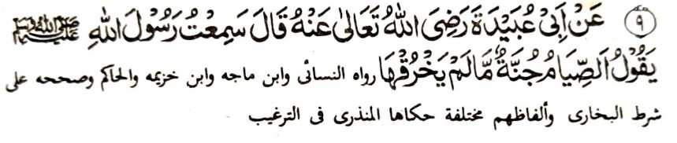
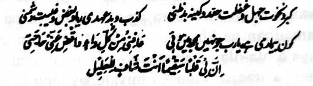

Hadith 9

Miyakathitayan ko Abu 'Ubaidah (Radhiallaho Anho) a pitharo iyan a miyaneg aken so Rasulollah (Sallallaho Alaihi Wasallam) a gi-i niyan tharo-on, "So powasa na kelong asar ka di niyan lebowan.”
OSAYAN
So [katharo a] si-i a “kelong” na aya ma-ana niyan na lagid den o kalilidinga o tao ko ginawa niyan sa nggolalan ko kelong, na lagid den noto a kapekhalindinga-on o powasa ko rido-ai niyan a marayag [ma-ana so Shaitan]. Si-i ko manga ped a Hadith, na pitharo reketano a so powasa na khalinding iyan so tao ko siksa o Allah (Subhaanaho Wa Ta'ala) ago so apoy ko Naraka ko Akhirat. Miyaka-isa na aden a miniza ko Rasulollah (Sallallaho ‘Alaihi Wasallam), "Antona-ai kapekhalebo o powasa?” Minisembag iyan, “So kapamokhag ago so kapamaganta.”
Giyangka-iya a Hadith na opama iped matiya ko manga ped a salakao ron a Hadith, na aya kamata-ani ron na gi-i niyan reketano tharo-on so kapananggila-i tano ko langon o galebek a khabatal iyan so powasa. Si-i sangka-iya a masa tano, na aya ola-ola tano na phagilangen tano so masa tano a nggolalan ko da a rarantek iyan a bitiyara. So saba-ad ko manga Olama na miyata-ayon siran sa so kapamokhag, go so kapamaganta, so kapama-awing, go so manga ped iyan, na aya kamata-ani ron na pekhabatal iyan so powasa sa lagid den [o kapekhabatala-on] o kakan ago so kainom, ogaid na so kadakelan ko manga Olama na aya paratiyaya iran na kena ba miyabatal so powasa ogaid na miya-ilang so balas iyan. So manga Olama ko Islam na inaloy ran a nem a nganin, a phananggila-an o tao igira gi-i phowasa:
Paganay ron, na pananggila-i o tao o ba niyan mailay so di niyan khapakay a ila-in; sa aden a saba-ad a inisapar iyan pen so kailaya o tao ko karoma sa kabaya, aya pen so salakao a ba-i. Sakamaoto mambo, so kailaya ko marata a ola-ola o di na so darepa a gi-i nggola-olaan sa dosa na phananggila-an. So Rasulollah (Sallallaho ‘Alaihi Wasallam) na miyatharo iyan, “So kailay na lagid o pana a pho-on ko Shaitan. Sa tao a, sabap ko kalek iyan ko Allah (Subhaanaho Wa Ta’ala), na misapar iyan ko ginawa niyan so kaphagilaya niyan ko marata na mbegan sekaniyan o Allah (Subhaanaho Wa Ta’ala) sa sindao a paratiyaya, a so ta-am iyan ago so kapipiya ginawa a pekhakowa rekaniyan na khagedam iyan ko poso iyan.” So manga Auliya na initapsir iran sangkanan a katharo sa so phananggila-an o kailay na ped ro-o so langowan a darepa ago nganin a pekhabira-i iyan so pamikiran pho-on ko kakhatademi ko Allah (Subhaanaho Wa Ta’ala).
Ika dowa, na paliyogat ko tao so kasiyapa niyan ko dila iyan pho-on ko kapamokhag, go so da a bali niyan a bitiyara, go so kapamaganta, go so kapakiphapawala, go so kazasapa [sa di benar], go so manga ped a lagid anan. Si-i ko [Sahih] Bukhari, na miyabatiya tano ron a so powasa na kelong o tao a gi-i mamowasa; sabap si-i na, so langon o gi-i mamowasa na pananggila iran so langon o katharo a da a bali niyan, go so kazasandag, go so kapakiphapawala, go so manga lagid iyan. O aden a tao a makipephawala, na tharo-a ngka: “Gi-i ako phowasa.“ Aya ma-ana niyan na di khapakay ko tao o ba sekaniyan-i kapo-onan angkoto a kapakiphawala go o aden a magepho-on non na ped oto a phananggila-an o ba ka on maped. Opama ka giyangkoto a tao a makipephawala na da a sabot iyan, na aya minos na tademi o tao a: “Gi-i ako mamowasa.” Si-i ko masa o Nabi (Sallallaho ‘Alaihi Wasallam), na aden a dowa ka tao a ba-i a gi-i phowasa na tanto siran a miyakathalogedam sa gotem taman sa di ran den khagaga so gi-i ran kapamowasa sa lagid o ba siran den phatay a dowa katao. Piyakitokawan noto o manga Sahabah ko Nabi (Sallallaho Alaihi Wasallam), na piyakiwitan niyan siran sa dowa a ladia na inisogo iyan kiran a nggowa siran non. So kiyanggowa iran a dowa sangkoto a manga ladia, na aya miyagowa iran na manga sapo a migi-migis sa rogo’. So manga Sahabah na tanto siran a miyamemesa, sa misabap ro-o na so Nabi (Sallallaho ‘Alaihi Wasallam) na miyatharo iyan, “Iniphowasa iran so Halaal a pangenengken, ogaid na komiyan siran sa Haraam a pangenengken misabap sa gi-i ran kapamaganta-a ko manga ped a tao.” Pho-on sangkanan a miya-aloy [a tothol], na miyarinayag a so kapamowasa na tanto a pephakaregen misabap ko kapamaganta ko masa a gi-i tano mamowasa; giyoto-i sabap a giyangkoto a dowa ka tao a ba-i na ba iran bo da patain. Lagid oto mambo so betad o manga ped a dosa, a so kiyatepengi ron na so siran a tanto a pati-is, go ma-aleken ko Allah (Subhaanaho Wa Ta'ala), na so powasa na tanto kiran a malebod, ogaid na so manga baradosa na tanto kiran a maregen. Paliyogat ko tao a kapananggila-i niyan ko manga dosa balabao ron so manga ala a dosa, lagid o kapamaganta ago so kapanotiya, a aya kalalayaman a pekhasogok ko kapethembanga ko [ginawa ko kalendo o] masa [a kadaondao]. So Allah (Subhaanaho Wa Ta’ala) na pitharo Iyan sa Qur’an a so kapamaganta na lagid den o kapekhana ko sapo o pagari ta a miyatay. Miyapanothol pen na-i ko manga ped a Hadith. Miyaka-isa na so Nabi (Sallallaho ‘Alaihi Wasallam) na so kiya-ilaya niyan ko manga tao na pitharo iyan kiran a kapanisiga iran ko manga ngipen niran. Pitharo iran a da a ba iran miyakan a sapo sangkoto a gawi-i, na so Nabi (Sallallaho ‘Alaihi Wasallam) na miyatharo iyan, “So sapo-i girao na khidedeket ko pagelet-letan o manga ngipen niyo." Kiyasabotan niran a gi-i siran makapamaganta. Ilidas tano o Allah (Subhaanaho Wa Ta’ala) sangka-iya marata, sabap sa mindadarainon tano angka-iya a lalangan. Langon tano si-i pephakasogok; kena ba so bo so kalilid a tao, ka apiya so manga ala-i daradat a manga tao na pephakasogok si-i, go apiya so bara-Agama a manga tao si-i ko manga kalilimod iran na di ran khalidasan so kapamaganta. Aya tanto niyan a karata na aya mata-an na di tano pen mai-inengka o antona-ai kapamaganta; sa apiya katawan tano a gi-i tano makapamaganta na pezapengan tano sa salakao a tothol. Aden a Sahabi a ini-iza iyan ko Rasulollah (Sallallaho ‘Alaihi Wasallam), “Antona-ai kapamaganta?” Inisembag o Rasulollah (Sallallaho ‘Alaihi Wasallam), “So ka-aloya ngka ko [ola ola o] pagari ngka ko di niyan kapakadadarepa a ikhararangit iyan [o makadadarepa sekaniyan].” Oriyan noto a giyangkoto a Sahabi na miyatharo iyan, “Ba pen kapamaganta opama ka benar angkoto a gi-i ta panotholen?” So Nabi (Sallallaho Alaihi Wasallam) na miyatharo iyan, “O giyanan maola-ola na giyanan-i titho a kapamaganta; ka opama ka di benar na miyapanotiya-a ka sekaniyan.” Miyaka-isa na so Nabi (Sallallaho ‘Alaihi Wasallam) na siyagadan niyan a dowa a Qobor. Miyatharo iyan, “Giyangka-iya dowa a matatago sangka-iya manga Qobor na peziksa-an siran ko soled a Qobor. So isa na aya bo a ipeziksa-on na misabap sa kapamaganta, na giyangkanan a ika dowa na giyabo a di niyan kaphananggila ko [kapekhataresiki ron] igira pethiti." So Rasulollah (Sallallaho ‘Alaihi Wasallam) na miyatharo iyan pen, “Kalalawanan so pito polo a piphangkatan o kathobo. Aya miyakababa-baba on na so kapamakaya o tao ko ina iyan, go so kakowa sa salad bo a iseg na lebi oto a marata a di so kapakazina sa makatelo-polo ago lima. Na aya piphaporo-an ago aya lebi a marata ko kathobo na so kapanotiya-a ko sakatao a Muslim.” Si-i ko mbaram-barang a Hadith na tanto tano ron a liyalangan ko kapamaganta ago so kapanotiya a ko Muslim. Tanto aken a pekhababaya-an a isorat aken si-i so madakel pen a manga Hadith, sabap sa so kadakelan ko manga kalilimod tano ago so gi-i tano kambibitiyara-i na aya den a kalilid na mipepeno-on angka-iya manga marata [kapamaganta ago kapanotiya]. Ogaid na miyapikir aken a tagoan aken sa diyangka, sabap sa aya bandingan tano si-i na salakao - kena ba kapamaganta. Giyoto-i sabap a pephangenin aken peman a ilidas tano o Allah (Subhaanaho Wa Ta’ala) sangka-iya a marata. Go pephangenin aken ko manga bolayoka aken ago so manga pagari aken a phagepeda ko iran non; sabap sa mapepeno so manga ginawa tano a karibatan.

‘"Antona-a pen-i sakit Ya Allah (Subhaanaho Wa Ta’ala)! a di raken matatago, Bolongi ako Ngka ko omani sakit go began Ka raken so manga singanin aken. Mata-an a so poso aken na zasakit, Mata-an a Seka-i Pephamolong ko pekhasakit.”
Ika telo, na siyapen tano so manga tangila tano o ba tano mipephamamakineg ko di mapiya (Makrooh). Lagid oto mambo a di khapakay so kapephamamakinega ko langon a di khapakay alowin. So Rasulollah (Sallallaho ‘Alaihi Wasallam) na miyatharo iyan, “Si-i ko kapamaganta, na so pephamaganta ago so pephamamakinegon na langon pekhadosa.”
Ika pat, na so langon o anggaota o lawas na phakipalagoyan non so dosa ago so manga inisapar. Di phakikawa ko manga barokan ago di phakilalakao ko manga a-i. So peman so tiyan, na khasiyap phiya-piya, balabao ron ko masa a kapethangkas, sa da den a makasoledon a aden pen a sangka-an a atay ko kababaloy niyan a Halaal. Amay ka so tao na gi-i mamowasa, na si-i ko masa a ‘Iftar’ [ilalapis], na koman sekaniyan sa Haraam a pangenengken, na lagid sekaniyan o tao a mininom sa bolong a iphamolong iyan, ogaid na liyo-okan niyan sa maito a doti a iphatay niyan.
Ika lima, oriyan o kapakaphowasa, na di mapiya so tanto a kapeno-a ko tiyan apiya Halaal a pangenengken ko masa a 'Iftar sabap sa tiyaban so antap o kaphowasa. So kaphowasa na aya hadap iyan na so kapaka-ito o napso hawa o tao go so kapakala o bager o paratiyaya niyan ago so niyawa niyan. Si-i ko soled o sapolo ago isa olan, na kabobotawanan tano ko kakan ago so kainom, na si-i ko soled o Ramadhan na khenetan noto. Miyalayam tano den ko di mapiya a ola-ola a kapepheno-a tano ko tiyan tano ko masa a ‘Iftar’ a ithapal tano ko miyalepas tano [a ikakan], ago si-i ko masa a ‘Sehri [ipopowasa] ka pagiyasa tano sangkoto a zagad a kadaon-dao, sa kiyasabapan sa baden kiyapakala o pekhakan tano. So Ramadhan sangkoto a manga tao [a gi-i ro-o nggola-ola] na miyatanor iyan baden so pana-antaaman niran. Kadakelan sangkoto a pangenengken a pekhen tano na kena ba tano kalalayami a kapephakakan tano ron ko manga ped a masa. Giyangka-iya okit a kapanganengkanan na tarotop a kapakasosorang iyan ko ‘enda-o o Ramadhan ago so hadap o titho a kaphowasa.
So Imam Ghazali (Rahmatullahi ‘Alaihi) na ini-iza iyan so lagida-i a paka-iza, “Opama ka aya hadap o kaphowasa na so katabana tano ko baya a ginawa tano a izopak tano ko Iblis (Saitan), na anda manaya-i kakhakowa-a si-i nggolalan ko tanto a kitaralo o kakan igira ilalapis?” Aya mata-an na so lagid anan a ola-ola baden miya-alin so masa a kakan, sa kena ba titho a miyakaphowasa. Aya mata-an na sabap ko madakel a pimbarang a pangenengken, na pephakala baden so kalalayaman a kakan tano. Aya mini-onga niyan na kena ba niyan kiyakenetan so baya a ginawa, ka ba niyan den miyapaka-magomareg So titho a gona a khakowa ko kapamowasa na giyoto-i onga o kapakasagad sa titho a kapagongos. So Nabi (Sallallaho ‘Alaihi Wasallam) na miyatharo iyan, ”So Shaitan na pephalalagoy ko lawas o manosiya sa lagid den o rogo’; sa totopi niyo so manga lalan niyan nggolalan sa kapagongos”, ma-ana igira a pekhagotem so lawas, na pekhatago-an sa bager so niyawa Liyo pen ko kapagongos, na so powasa na pekhabegan tano niyan sa okit a katokawi tano ko mambebetad o manga Miskin ago so Pekhareregenan, sa misabap ro-o a kapephagomareg a gagao kiran [a manga Miskin]. Giya-i mambo na aya bo a kakhatago iyan ko tao na so kapagongos sa kena ba [misabap] ko kapeno-a ko tiyan a manga pipiya pangenengken ko ‘Sehri’, sa so tao na di ka-oran taman ko ‘Iftar’. Miyaka-isa na aden a tao a somiyong ko Bishr Haafi (Rahmatullahi ‘Alaihi), na miya-oma niyan a tatabaden sa tenggao, makim pen aden a manga ayao a bangkala ko obay niyan. Mini-iza angkoto a tao, “Ba ini masa a ipagenda sa bangkala?” Minisembag o Bishr: “Madakel a miskin ago kasisikotan. Di aken siran miphangapedi; sa aya bo a pithamanan a miyanggola-ola ko na matago ako si-i ko betad iran.” So manga Auliya na lagid anan mambo a paparangayan niran ko kapamowasa go so manga Fuqahaa (manga poporo a manga Ulama). Si-i ko [kitab a] Maraqiul Falaah, na misosoraton: “Di ka tanto phaka-osog igira Sehri, ka giya-i okit a kakhada o antap o kaphowasa.” So Allaama Tahtaavi (Rahmatullahi ‘Alaihi) na inizorat iyan: “Igira titho a miyagedam so ka-or, na so balas o kaphowasa na matatangked so kiyapakala iyan.
Sakamaoto, a pekhagedam so mambebetad o manga Miskin ago so pekhakagotem.’’ So Nabi (Sallallaho 'Alaihi Wasallam) na miyatharo iyan, “So Allah (Subhaanaho Wa Ta'ala) na da pen a inikagowad iyan a pekhapeno a nganin a ba niyan kalawani so kagowad Iyan ko kapeno-a ko tiyan." Si-i ko salakao a masa, na so Nabi (Sallallaho Alaihi Wasallam) na miyatharo iyan, “Kiyatangka-an so da mapira ami a mapakatindeg iyan so likod.” Aya taralebi ko tao na so ika telo bagi na thago-an sa pangenengken, na so ika dowa bagi na thago-an sa ig, na so sabagi-on na da a tago iyan. So Rasulollah (Sallallaho ‘Alaihi Wasallam) na lalayon gi-i mamowasa ko phipira gawi-i a makathotondo-tondog a da den a pekhakan iyan ko pagelet-letan niran. Miya-ilay aken so Guro aken a Maulana Khalil Ahmad (Rahmatullahi ‘Alaihi) a aya pekhakan niyan na ba den kalalawanan so satiman a roti sa maito ko ‘Iftar’ ago si-i ko ‘Sehri’, si-i ko tenday o Ramadhan. Igira aden ko manga sisipeg iyan a pethegel rekaniyan sa kapakala-a niyan ko kakan niyan, na ipezembag iyan, “Kena ba ko pekha-or. Aya bo a kaphagontod aken a pekhan ako na sabap ko manga bolayoka aken.” Makapantag ko Maulana Shah Abdur Rahim Raipuri (Rahmatullahi ‘Alaihi), na miyaneg aken a igira Ramadhan, na si-i ko makaphipira gawi-i a menanayona na aya kapamowasa niyan na minom sa da mapira ka tagayan a ti (kapi) igira ‘Iftar’ ago igira ‘Sehri' a da pen a gatas son go da a paris iyan. Miyaka-isa na so tanto niyan a sasarigan a morit (ago saliyanti) a so Maulana Shah Abdul Qadir (Rahmatullahi ‘Alaihi) na miyatharo iyan sa okit a kawan, “Hazrat, tanto ka a khalobayan opama ka da den a khen ka.” Sabap si-i na minisembag o Maulana Shah Raipuri: “So langowan a podi na rek o Allah (Subhaanaho Wa Ta’ala), makagegedam ako sa kapipiya ginawa o Sorga.” Began tano o Allah (Subhaanaho Wa Ta’ala) sa kapakagaga a masongkad tano angkoto a manga pati-is a manga tao. Aameen!
Ika nem a thanodan na, oriyan o powasa, na so tao na kapadaleman sa awida akal o ino so powasa niyan, tiyarima o Allah (Subhaanaho Wa Ta'ala) antawa ka da. Giya-i pembaloy a takes o langon a 'Ibadaat' [simba]. Da a mata-o ron a ba baden aden a rokon a mimbagak a da mainengka. Lalayon kaleken o tao o ba baden di tarima-a o Allah (Subhaanaho Wa Ta'ala) so manga ‘Amaal iyan. So Rasulollah (Sallallaho ‘Alaihi Wasallam) na miyatharo iyan, “Madakel a pababatiya sa Qur'an a ipephamaninta siran o Qur’an." Miyatharo iyan pen, “Si-i ko Gawi-i a Qiyamah, na ped ko siran a paganay zomariya-an o Allah (Subhaanaho Wa Ta'ala) na sakatao a ‘Shahid’ [miyaperang sa Lalan ko Allah (Subhaanaho Wa Ta’ala)! Pakitalowan sekaniyan o Allah (Subhaanaho Wa Ta’ala) na pakitademan Niyan non so manga limo Iyan non, sa langon niyan tarima-an. Oriyan niyan na iza-an sekaniyan “Antona-ai pinggola-ola ngka a panalamat sangkanan a manga limo?” Tharo-on o Shahid, “Mipherang ako taman sa ron ako miyaperang.” Isembag o Allah (Subhaanaho Wa Ta’ala). “Pamerak! Mipherang ka sabap sa angka katalowi a mawaraw a mama.” Oriyan noto na isogo a ipangaras so paras iyan na pozangen ko Jahannam. Oriyan noto na talowan peman a sakatao a ‘Alim. Pakitademan rekaniyan mambo so manga limo o Allah (Subhaanaho Wa Ta’ala) na iza-an sa lagid oto a paka-iza. Isembag iyan: “Hay Kadenan ko! Pithontot aken so Ilmo, go inipangenda-o aken ko manga ped ago pantag ko kasoso-at Ka na biyatiya aken so Qur’an.” Tharo-on o Allah (Subhaanaho Wa Ta’ala): “Pamerak! Pinggalebek ka nan, a aya bo a antap san na angka katalowi a miyakasowa, na miyatharo den angkanan [o manga tao].” Oriyan niyan na isogo mambo a ipangaras so paras iyan na pozangen ko Jahannam. Oriyan noto na talowan peman a sakatao a kawasa. Oriyan o kapakitademi ron ko manga limo o Allah (Subhaanaho Wa Ta’ala), go langon niyan matarima, na isembag iyan ko paka-iza o Allah (Subhaanaho Wa Ta’ala) o antona-ai inipanalamat iyan a: "Da den a mala-i kipantag a galebek a ba ko ron da makazadeqa a soa-soat aken Reka.” Aya isembag o Allah (Subhaanaho Wa Ta’ala) na “Pamerak! Pinggalebek ka nan ka kagiya angka katalowi a barazadeqa. Na miyatharo den noto [o manga tao].” Oriyan niyan na isogo mambo a ipangaras so paras iyan na pozangen ko Jahannam. Madakel a lagid anan a mapenggola-ola a miya-aloy ko manga Hadith. Giyoto-i sabap a so tao a gi-i mamowasa na kena ba giya bo a kapha-ikhlas iyan ka i-inamen niyan pen a tarima-an o Allah (Subhaanaho Wa Ta’ala) so powasa niyan.
Giyangkanan a miya-aloy a nem a sarat na paliyogat ko titho a pati-is a manga tao. So peman so mitataralo a pati-is na aden a ika pito a thanodan a khi-oman on. Giyoto so, igira masa a powasa, na so poso na di khapakay o ba aden a salakao ko Allah (Subhaanaho Wa Ta’ala) a mapipikir iyan, taman sa si-i ko masa a kapamowasa na da den a khatago-on a awida akal melagid o aden a khilapis antawa ka da. Saba-ad ko manga Auliya na ibebetad iran sa pa-awing so kapamikira ko antona-ai khakan amay ka ilalapis, o di na peromasayan o tao so kapakakowa sa nganin [a makan], sabap sa tanda ini sa kada a sarig ko diyandi o Allah (Subhaanaho Wa Ta’ala) sa kaphangakowi Niyan ko Rizq. Si-i ko osayan ko [kitab a] Ihya Ulumid Deen, na so mizoraton na ini-oman niyan non pen a o aden a miyoma a pangenengken a ipelapis ko da pen kaoma o ‘Iftar, na so ‘Mashaikh’’ na ipembegay niyan sa salakao, sa kawan sa o ba baden so lamba ko kadaon-dao na mabirai so poso ko tadem ko Allah (Subhaanaho Wa Ta’ala) sabap ko katatago-a on [a pangenengken]. Giya-i na aya bo a makapenggola-ola si-i na so siran a titho a manga pati-is. Di tano khagaga mamimikiran o ba tano katago-i sa lagid anan a mabager a paratiyaya. Opama tepengi tano siran somowa a da reketano angkanan a mabager a paratiyaya na miyabinasa tano a ginawa tano.
So Qur'an na misogo iyan: “So powasa na inipaliyogat rekano." So manga pananapsir ko Qur'an na pitharo iran a pho-on sangka-iya a Ayaat na kiyatokawan tano a so powasa na paliyogat ko pithanggisa-an o anggaota o lawas. Giyoto-i sabap a so powasa o dila na aya ma-ana niyan na so kapananggila-i ko kapamokhag ago so manga ped iyan, so powasa o manga tangila na so di ron kipamakinegen ko marata, so powasa o mbala a mata na so di ron ki-ilain ko langowan a marata. Sakamaoto mambo a so powasa o ginawa na so kipagawa-an ko baya a ginawa a ribat. So powasa o poso na aya ma-ana niyan na so kipagawa-an ko babaya ko donya. So powasa o pamikiran na aya ma-ana niyan na so kapananggila-i ko manga pamikiran a salakao ko Allah (Subhaanaho Wa Ta’ala).